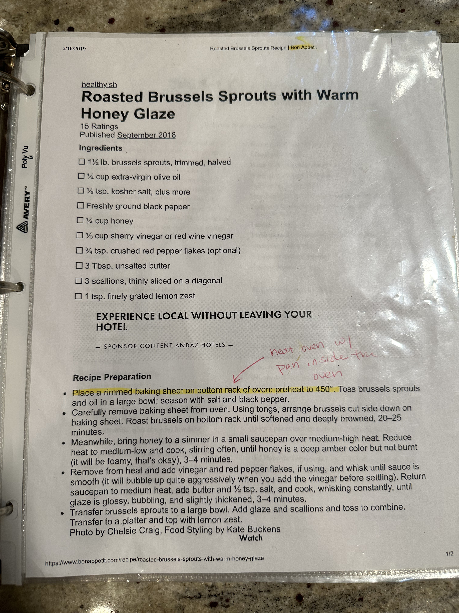
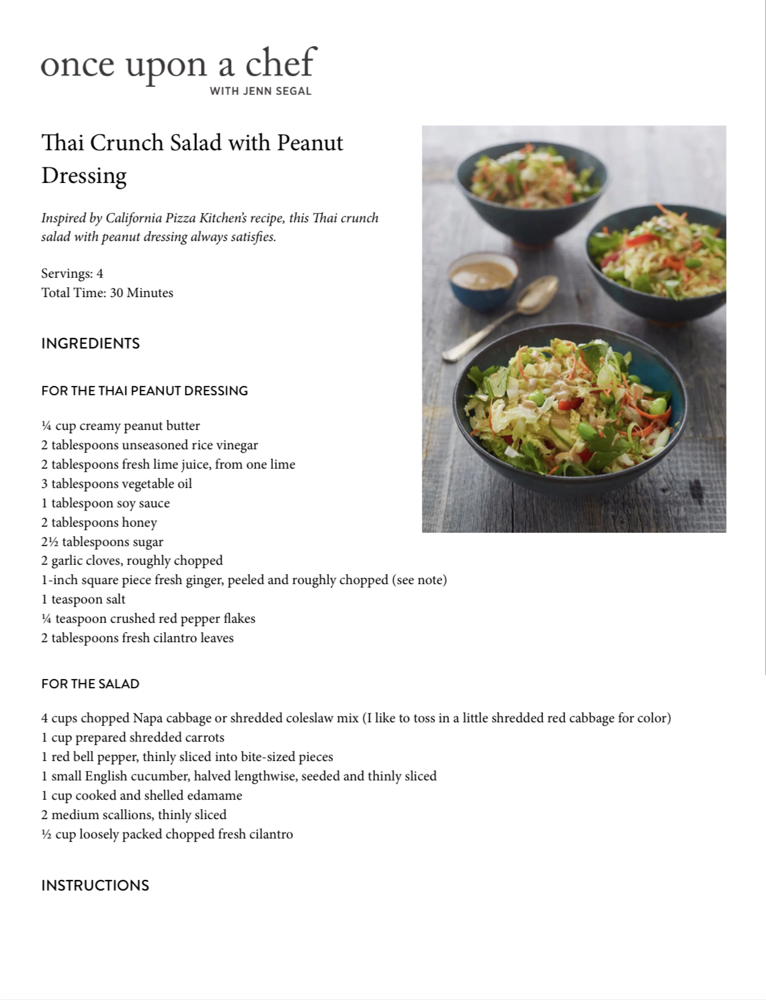

Recipes!
Reference Websites
Salmon Rub (Easy)
Ingredients Needed:
- Olive Oil
- Salmon Rub (Turbinado sugar, smoked sea salt, black pepper, coriander, orange zest, celery seed, cumin, fennel, dill, star anise)
Dressing Chicken Marinade (Easy)
Ingredients Needed:
- Chicken Meat (Any Type)
- Vinaigrette (Check “Salad Dressing”)
- Lemon/Lime
- Chives
Thai Skirt Steak

Baked Pork Loin
Fish Fingers (Can sub with boneless chicken)
Substitute Old Bay for Aromat/Streumi
Thai Peanut Salad

High Protein Granola
Pan Fried Green Beans: Olive Oil, Soy Sauce, Aromat - After browning add water and steam